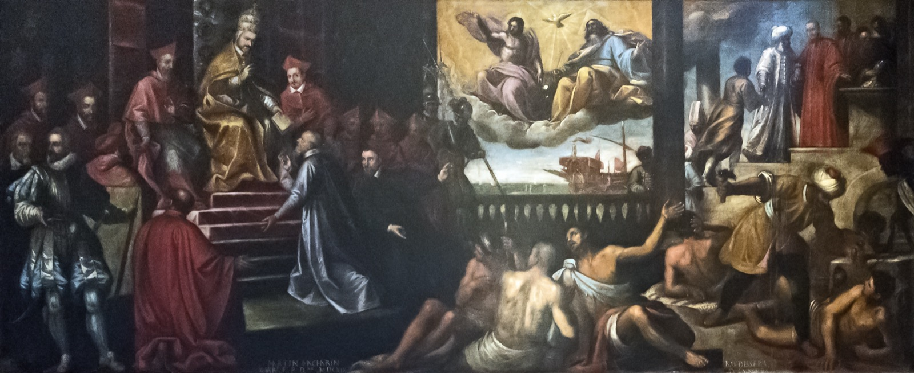
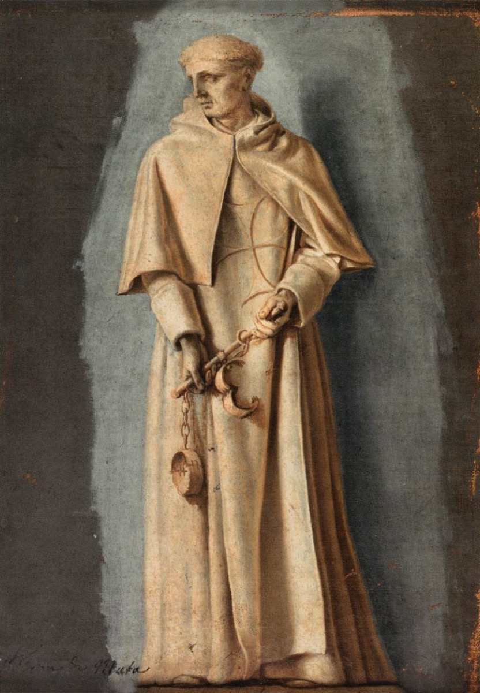
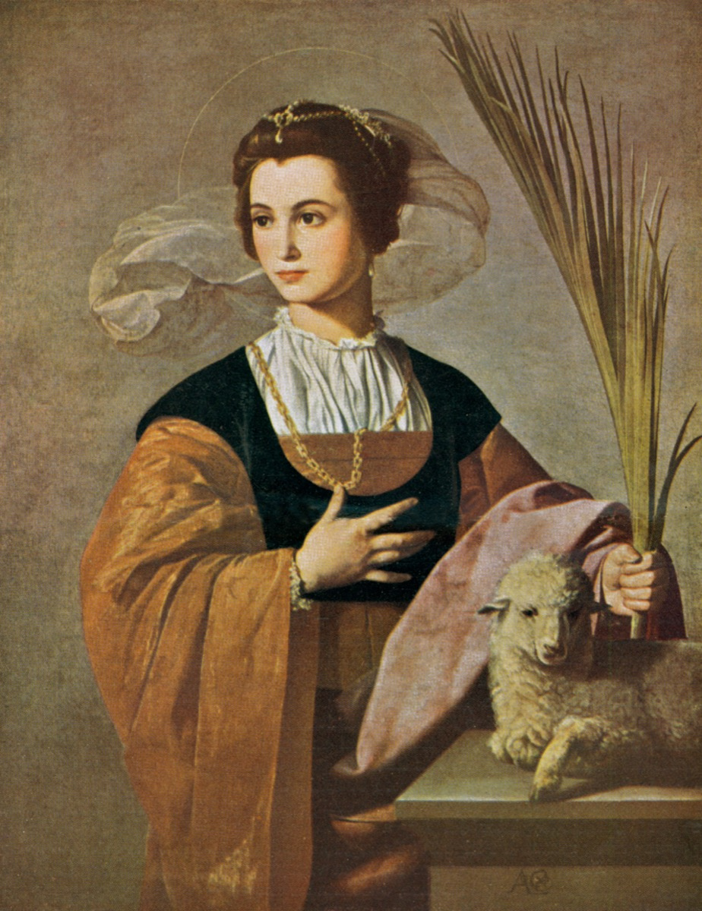
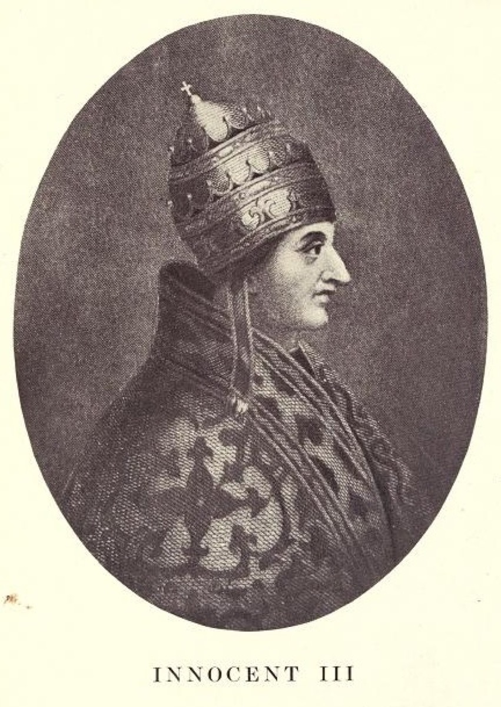

Background & History
The Trinitarian Order
Founding
The Order of the Most Holy Trinity and of the Captives was founded by Saint John de Matha (c. 1154–1213), with Saint Felix de Valois (d. c. 1212) as co-founder. According to tradition, during St. John de Matha’s first Mass he received a vision of Christ the Redeemer between two captives — revealing his call to ransom Christian captives. The Order’s proper Rule was approved by Pope Innocent III on 17 December 1198 (bull Operante divinae dispositionis clementia).

The Charism
The Trinitarians exist for two ends: the glorification of the Most Holy Trinity and the redemption (ransom) of captives. Born of the historical work of redeeming Christians held captive, this charism continues today in prayer, works of mercy, and the ongoing redemption of the “captives of our day.” Members call themselves the “house of the Trinity and of captives.”
The Habit & the Cross of Two Colors
The white Trinitarian habit bears the Cross of the Two Colors — a Greek cross with a red vertical bar over a blue horizontal bar. Red signifies charity and the ransom (the blood of redemption); blue signifies heaven and the divine. This emblem is the visual heart of the Order’s identity.

Patrons & Principal Saints
- Our Lady of Good Remedy — principal patroness (Solemnity, 8 October).
- Saint Agnes — principal patroness (Feast, 28 January).
- Saint John de Matha — Founder (Solemnity, 17 December).
- Saint Felix de Valois — Co-founder (Memorial, 4 November).



The Order Today
The Trinitarians are a Catholic clerical religious order (of Pontifical Right) comprising priests, brothers, nuns, and lay members of the Third Order, serving worldwide. The Curia Generalizia is in Rome.
Sources
- Order of the Most Holy Trinity — Curia Generalizia: trinitari.org
- Trisagion (Italian forms): trinitari.org/devozioni
- Trinitarian liturgical calendar (Calendario liturgico – Feste): trinitari.org/calendario-liturgico-feste
- U.S. Province: trinitarians.org
- Third Order: thirdordertrinitarians.org
- English short Trisagion & feast calendar cross-check: The Trinitarian Way handbook (2010). English Sanctus on this site follows the 2011 Roman Missal (“God of hosts”); the 2010 handbook still prints “God of power and might.”
- English longer Trisagion: modern USA form (not the 2010 handbook long form).
Texts and historical facts are attributed to the Order of the Most Holy Trinity and of the Captives. This site is informational and not an official publication of the Order. Image licenses: see assets/img/SOURCES.md.